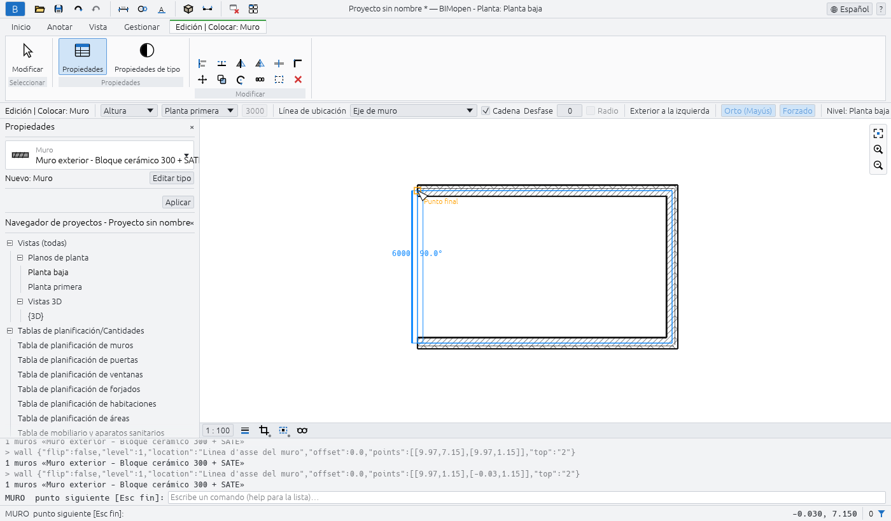
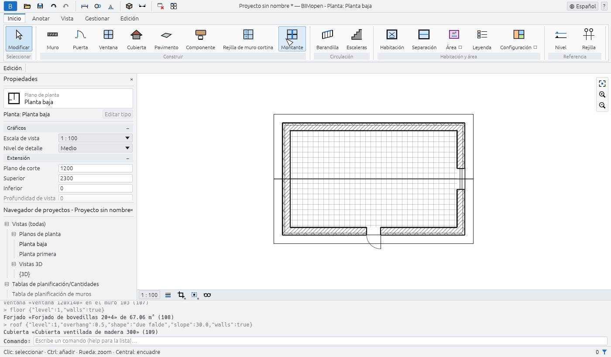
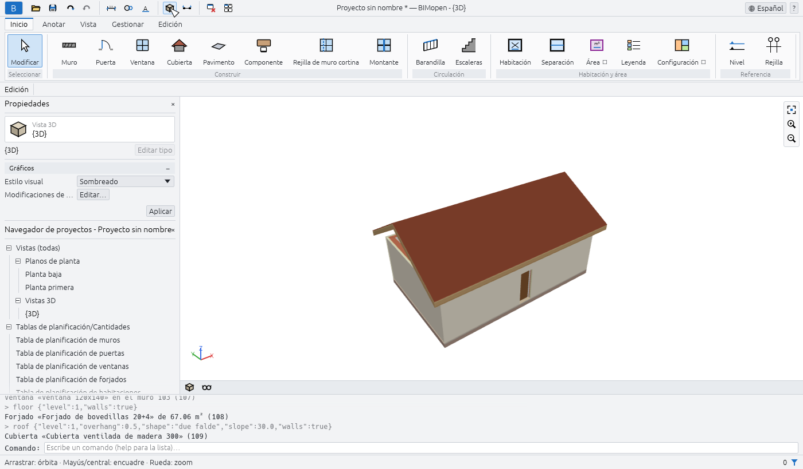
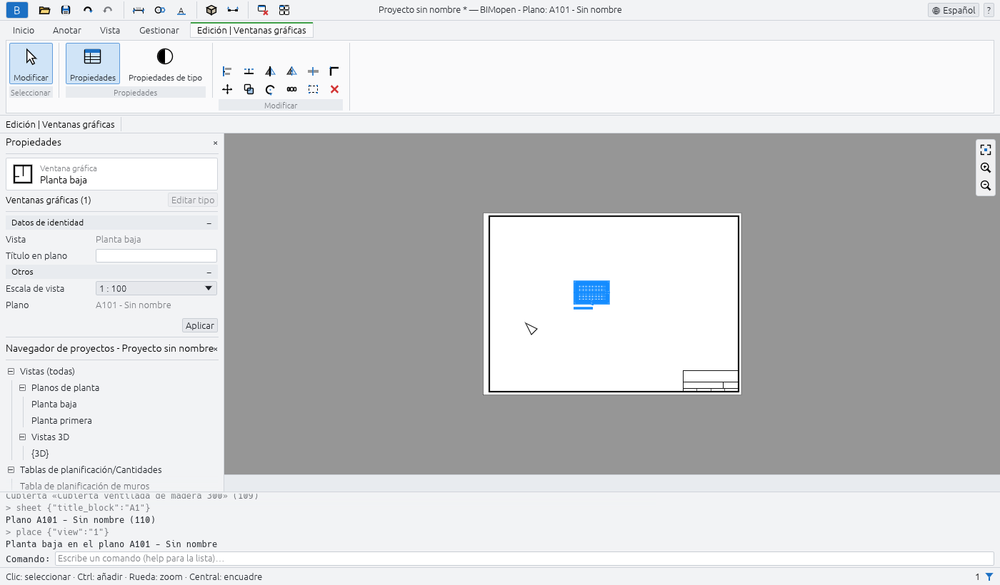

Primeros pasos
Este capítulo muestra cómo iniciar BIMopen en el escritorio y en el navegador, qué contiene el proyecto de ejemplo y cómo modelar una primera casa pequeña: cuatro muros, una puerta, una ventana, un suelo, una cubierta, una vista 3D y un plano con la planta colocada. Lleva unos diez minutos.
Ejecutar BIMopen en el escritorio
BIMopen se compila a partir de su código fuente con Rust, versión 1.90 o posterior. En Linux, la interfaz gráfica necesita además los archivos de desarrollo de xkbcommon, Wayland y GTK 3.
sudo apt-get install -y libxkbcommon-dev libwayland-dev libgtk-3-dev # Debian, Ubuntu
cargo run --release -p bimopen -- --sample # opens the sample house
El programa es bimopen. Acepta un archivo que abrir y una opción:
| Comando | Qué abre |
|---|---|
bimopen |
Un proyecto nuevo y vacío |
bimopen --sample |
La casa de ejemplo |
bimopen house.bimopen |
El proyecto guardado en house.bimopen |
También puedes abrir un proyecto arrastrando un archivo .bimopen desde el gestor de archivos a
la ventana.
Idioma y tema
La primera vez, BIMopen habla el idioma del sistema operativo si es uno de sus seis idiomas (italiano, inglés, alemán, francés, español, árabe), y en caso contrario inglés. Para cambiarlo, usa el menú de idioma en el extremo derecho de la barra de título (el globo con el nombre del idioma), o Menú de la aplicación ▸ Opciones ▸ Idioma. La interfaz cambia al instante.
En Opciones también eliges el Tema, Claro u Oscuro, y si el fondo de las vistas se invierte (Invertir color de fondo: vistas oscuras con líneas claras). Elegir el tema oscuro también invierte el fondo; puedes volver a desactivarlo. BIMopen recuerda el idioma y el tema para la próxima vez.
Ejecutar BIMopen en el navegador
La versión web es el mismo programa, compilado para el navegador. Abre atsanna.github.io/bimopen-site/app/: se inicia con la casa de ejemplo. No hay que instalar nada, y el proyecto se queda en tu navegador: no se envía a ninguna parte.
La dirección acepta estas opciones, que se pueden combinar con &:
| Dirección | Efecto |
|---|---|
app/?lang=de |
Abre en alemán durante esta visita (it, en, de, fr, es, ar) |
app/?empty |
Se inicia con un proyecto nuevo y vacío en lugar del ejemplo |
app/?webgl |
Dibuja con WebGL2 incluso donde WebGPU está disponible |
El navegador debe admitir WebGPU o WebGL2. En el navegador algunas cosas funcionan de otra manera:
- Abrir… no puede mostrar un cuadro de diálogo de archivos: arrastra un archivo
.bimopena la página para abrirlo; - Guardar y las exportaciones descargan el archivo, con el nombre del proyecto.
Para compilar tú mismo la versión web:
cargo xtask web # builds dist/web
python3 -m http.server 8080 -d dist/web # then open http://localhost:8080
cargo xtask web necesita el destino wasm32-unknown-unknown de Rust y el comando
wasm-bindgen de la versión indicada en Cargo.lock; con wasm-opt de binaryen instalado, el
resultado es más pequeño.
El proyecto de ejemplo
La casa de ejemplo muestra la mayor parte de lo que BIMopen sabe hacer. Ábrela con Menú de la
aplicación ▸ Proyecto de ejemplo, con bimopen --sample, o escribiendo sample en la línea de
comandos.

Contiene:
- dos niveles, cada uno con su planta, y cinco líneas de rejilla;
- quince muros de cuatro tipos, con capas, unidos en las esquinas;
- seis puertas y doce ventanas, etiquetadas en las plantas;
- dos suelos, una cubierta inclinada, una escalera con sus barandillas y un muro cortina de escaparate;
- mobiliario y aparatos sanitarios, ocho habitaciones coloreadas por uso, con una leyenda;
- una sección, un alzado, un plano de áreas, una vista 3D guardada y una vista de diseño con un detalle de muro;
- cotas, notas de texto y las tablas de planificación de muros, puertas, ventanas, habitaciones y materiales.
Tip
El ejemplo es un buen lugar para probar una herramienta antes de usarla en tu propio proyecto: un ejemplo nuevo está siempre a un clic, y nada de lo que cambies en él se guarda a menos que lo guardes tú.
Tu primera casa
Los pasos siguientes parten de un proyecto vacío y terminan con un plano. Cada paso indica el botón en el que hacer clic; el capítulo sobre la interfaz explica cada parte de la ventana.
1. Inicia un proyecto nuevo
- Haz clic en el botón azul B en el extremo izquierdo de la barra de título: se abre el menú de la aplicación.
- Haz clic en Nuevo.
El proyecto nuevo tiene dos niveles, Planta baja y Planta primera, una planta para cada uno y la vista 3D por defecto. Todavía no tiene muros. Sus tipos de muro, puerta, ventana, suelo y cubierta están listos para usar.
2. Abre la planta baja
En el Navegador de proyectos, bajo Vistas (todas) ▸ Planos de planta, haz doble clic en Planta baja. La planta se abre en el área de dibujo y la barra de título muestra Planta: Planta baja.
Note
Un solo clic en una vista del Navegador de proyectos muestra sus propiedades en la paleta Propiedades sin abrirla. Un doble clic la abre.
3. Dibuja cuatro muros
- Haz clic en Inicio ▸ Construir ▸ Muro. La cinta de opciones pasa a la ficha contextual Edición | Colocar: Muro, la barra de opciones muestra los parámetros del muro y Propiedades muestra el tipo del próximo muro, Muro exterior - Bloque cerámico 300 + SATE.
- En la barra de opciones, activa Orto (Mayús): los muros quedan horizontales o verticales.
- Haz clic en la planta donde va la primera esquina. La línea de comandos pide el punto
siguiente:
WALL next point [Esc to finish]:. - Haz clic en la segunda, la tercera y la cuarta esquina. Mientras mueves el ratón, la longitud y el ángulo del muro que se está dibujando se muestran junto a él.
- Vuelve a hacer clic en la primera esquina: los cuatro muros quedan unidos en las esquinas.
- Pulsa Esc para detener la cadena, y Esc otra vez para terminar la herramienta.

Tip
Puedes dibujar los mismos muros escribiendo sus esquinas en metros:
wall 0,0 10,0 10,6 0,6 c. La c final cierra la cadena. Consulta
Línea de comandos y MCP.
4. Añade una puerta y una ventana
- Haz clic en Inicio ▸ Construir ▸ Puerta y luego en un muro donde va la puerta. La puerta se
coloca en el muro, que se corta a su alrededor. La línea de comandos lo confirma:
Door «Single swing door 80x210» in wall …. - Pulsa Esc: la herramienta termina y la cinta de opciones vuelve a la ficha Inicio.
- Haz clic en Inicio ▸ Construir ▸ Ventana, haz clic en otro muro y pulsa Esc.
Una puerta o una ventana solo se puede colocar en un muro: tras un clic lejos de los muros, la
línea de comandos responde no wall at that point y no se coloca nada.
5. Añade un suelo y una cubierta
- Haz clic en Inicio ▸ Construir ▸ Pavimento. La ficha contextual Edición | Crear contorno de suelo tiene un grupo Dibujar con dos formas de crear el suelo: Línea de contorno, punto por punto, o Designar muros.
- Haz clic en Designar muros: se crea un suelo sobre el perímetro exterior de los muros del nivel, y la línea de comandos indica su área.
- Haz clic en Inicio ▸ Construir ▸ Cubierta. En la barra de opciones elige la forma (A dos aguas, A cuatro aguas o Plana), la Pendiente (30° por defecto) y el Voladizo (500 mm por defecto).
- Haz clic en Designar muros en el grupo Dibujar: la cubierta cubre los muros del nivel, con el voladizo en todo el contorno.

6. Mírala en 3D
Haz clic en el botón Vista 3D (el cubo) de la barra de herramientas de acceso rápido. Se abre la vista 3D por defecto, {3D}. Arrastra con el botón izquierdo del ratón para orbitar, arrastra con el botón central (o con Shift y el botón izquierdo) para encuadrar, y gira la rueda para hacer zoom. Home ajusta todo el modelo a la vista.

7. Coloca la planta en un plano
- Haz clic en la ficha Vista y luego en Composición de plano ▸ Plano. El cuadro de diálogo Nuevo plano enumera los cajetines: ninguno, A0, A1, A2 o A3, con su tamaño en milímetros.
- Haz clic en Aceptar. El plano se crea con el siguiente número libre (A101 para el primero, luego A102…) y se abre.
- Haz clic en Composición de plano ▸ Vista. El cuadro de diálogo Vistas enumera las vistas que aún no están en un plano.
- Elige Planta: Planta baja y haz clic en Añadir vista a plano. La planta se coloca en el plano a su propia escala, 1 : 100, como ventana gráfica, que queda seleccionada.

8. Deshaz, rehaz y guarda
- Ctrl+Z deshace el último cambio (aquí, la ventana gráfica desaparece); Ctrl+Y lo rehace. Las flechas de la barra de herramientas de acceso rápido hacen lo mismo.
- Ctrl+S guarda el proyecto. Un proyecto que nunca se ha guardado pide primero un nombre de
archivo; el archivo tiene la extensión
.bimopen. En el navegador, el archivo se descarga.
La barra de título muestra un asterisco tras el nombre del proyecto mientras haya cambios sin guardar: Proyecto sin nombre *.
Y ahora
- La interfaz describe cada parte de la ventana.
- Atajos de teclado enumera las teclas y los atajos de dos letras, como
WApara un muro. - Línea de comandos y MCP muestra cómo escribir comandos, ejecutar scripts y dejar que un agente modele por ti.